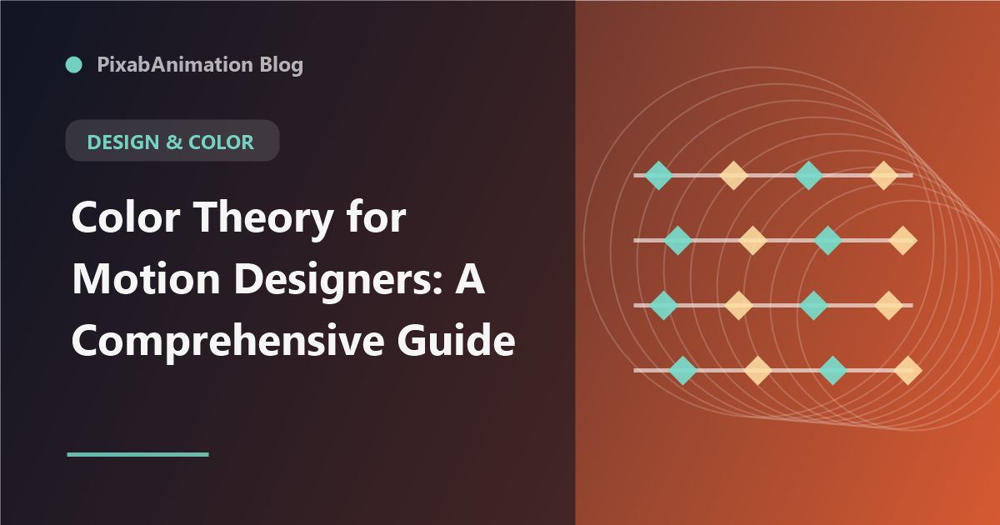

Color Theory for Motion Designers: A Comprehensive Guide

Color is one of the most powerful tools in a motion designer's arsenal. It sets the mood, guides attention, reinforces branding, and creates emotional impact. Yet many motion designers struggle with color selection and application. This comprehensive guide covers the essential color theory concepts that every motion designer needs to know, from basic color harmony to advanced color grading techniques for animation.
Understanding Color Basics
Before diving into color theory for motion, it is essential to understand the fundamentals. The color wheel — comprising primary, secondary, and tertiary colors — is the foundation of color relationships. Hue refers to the pure color, saturation controls its intensity, and brightness (or value) determines how light or dark the color appears. In motion design, understanding how these dimensions interact is crucial for creating visually cohesive animations.
Color Harmonies for Motion
Color harmonies are established combinations that create visual balance. Complementary colors (opposite on the color wheel) create high contrast and visual tension — ideal for attention-grabbing elements. Analogous colors (adjacent on the wheel) create harmony and unity — perfect for backgrounds and supporting elements. Triadic harmonies use three evenly spaced colors for vibrant, balanced palettes. For motion designers, the key is understanding which harmony suits different animation contexts.
Color in Motion
Color behaves differently in motion than in static design. When colors animate, attention is drawn to areas of high contrast or saturation change. Color transitions should be intentional — sudden shifts can signal importance while gradual transitions create mood shifts. Understanding how colors interact across frames is essential for creating coherent animated sequences. The same palette that works beautifully in a static composition may feel chaotic when animated if transitions are not carefully considered.
Color Psychology in Animation
Different colors evoke different emotional responses. Blue communicates trust, calm, and professionalism — widely used in corporate and technology animation. Red conveys energy, urgency, and passion — effective for calls-to-action and dynamic content. Green represents growth, nature, and harmony. Yellow evokes optimism and warmth. Purple suggests creativity and luxury. Understanding these psychological associations helps motion designers make intentional color choices that reinforce the message and emotional tone of each project.
Color Grading for Animation
Color grading — the process of adjusting and enhancing colors — is as important for animation as it is for live-action video. Motion designers use color grading to establish consistent looks across scenes, create atmospheric moods, and enhance visual storytelling. Essential tools include curves, color wheels, LUTs, and HSL adjustments. For motion projects, applying consistent color grading across the entire animation creates a polished, professional look.
Accessibility in Color
Color accessibility is a critical consideration in modern motion design. Approximately 8% of men and 0.5% of women have some form of color vision deficiency. Motion designers should ensure that color is not the only means of conveying information — use texture, position, animation, and labels alongside color cues. Maintaining sufficient contrast ratios (at least 4.5:1 for normal text, 3:1 for large elements) ensures readability for all viewers.
Tools and Workflows
Modern color tools have made it easier than ever to create and manage color palettes for motion projects. Adobe Color, Coolors, and Khroma generate harmonious palettes. Color LUTs can be applied across entire projects for consistent looks. After Effects offers comprehensive color correction tools including Lumetri Color, Color Finesse, and third-party plugins like Magic Bullet Looks. Developing a systematic color workflow — from palette selection through to final color grading — ensures consistent, professional results.
"Color in motion is not decoration — it is communication. Every color choice should serve the story, guide the viewer, and reinforce the emotional impact of the animation." — Motion Design Principles, 2026